A spring porch has to look fresh from the street and still survive a cold snap, a week of rain and a gusty afternoon. The pretty ones that fail usually fail on weather, not taste.
So the choices below are weather choices first: frost-hardy plants, outdoor fabric, drainage and hardware that holds.
These 25 ideas cover doors, props, seating, hanging baskets, lanterns and small spaces. Read the five rules first, because they save plants and money.
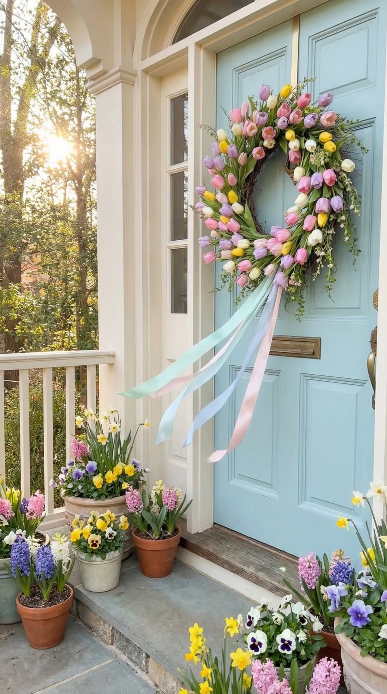
Five Rules for a Porch That Lasts Through Spring
- Plant what survives a cold night. Pansies, violas and primroses handle light frost, and potted tulips hold until warm weather. Save tender plants until nights stay above 50°F.
- Use outdoor fabric on anything that stays outside. Solution-dyed acrylic and polyester dry quickly and resist fading. Cotton soaks up rain and mildews.
- Give every pot a drainage hole. Standing water rots roots and breeds mosquitoes. Raise pots on feet if the floor is painted.
- Size up. A 24-inch wreath on a standard door and pots at least 14 inches wide read well from the street.
- Secure whatever the wind can move. Zip ties, wired hooks and heavy planters keep a gusty April day from toppling a display.
Wreaths, Mats and Door Planters
1. Let the Ribbons Move
A wreath with ribbon tails gets noticed from the sidewalk. Let the streamers hang 18 to 24 inches so they move in a breeze, as on this blue door.
Surround the door with pots of hyacinths, violas and daffodils, grouped in odd numbers. Violas and pansies shrug off light frost.

2. Match the Doormat to the Palette
A green door goes with every spring color. Pick a doormat in the same palette and the entry looks planned, as with this floral mat.
Choose a mat at least 24 by 36 inches. A smaller one looks lost on a standard porch.
Wisteria is heavy and strong, so give it a sturdy frame, not a thin porch post.
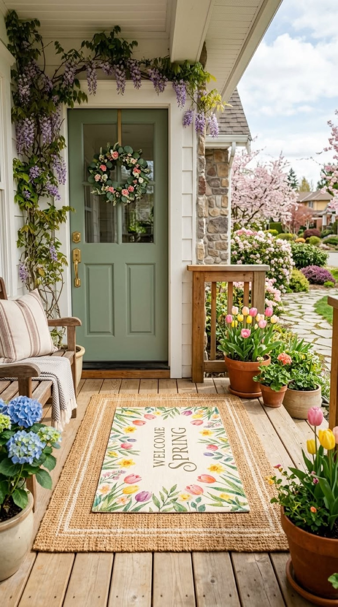
3. Keep a Busy House Calm
When the house is already busy, a plain wreath is enough. A round eucalyptus wreath with a pot or two on the floor feels calm.
Faux eucalyptus will not brown in the sun, so it can hang until summer.
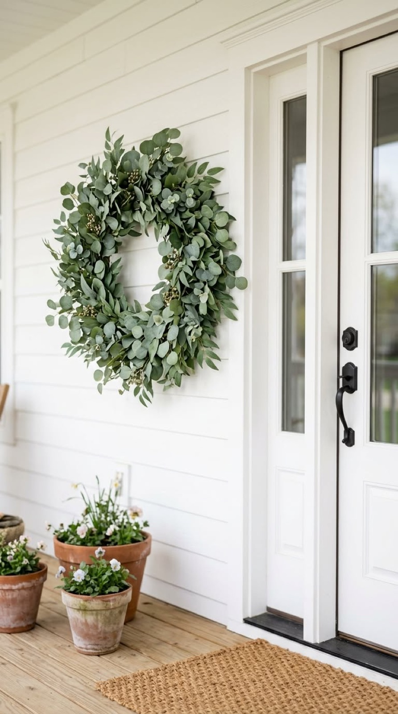
4. Group Planters in Threes
Planter groupings look best in threes at different heights. A tall pot, a medium basket and a low planter fill the corner here.
Put a jute mat in front and check that no planter blocks the door swing.
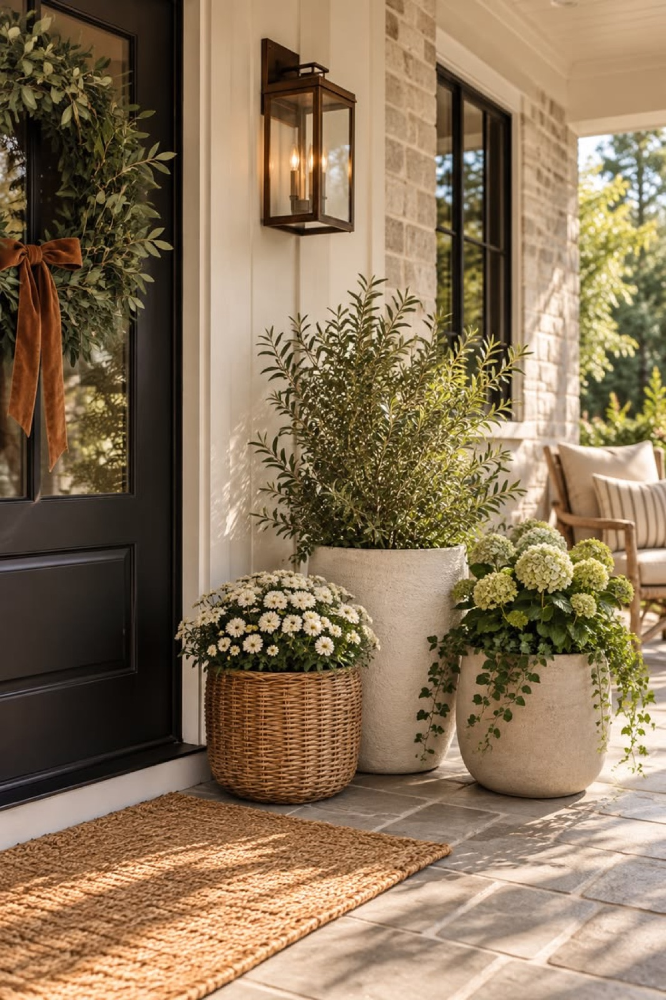
5. Put a Bench by the Door
A bench by the door gives guests somewhere to set a bag. Add two pillows in outdoor fabric and a lantern with a battery candle.
Use an over-door hook or a wired loop so you do not leave holes in the frame.
Solution-dyed acrylic or polyester dries fast and resists fading. Cotton soaks up rain and mildews.
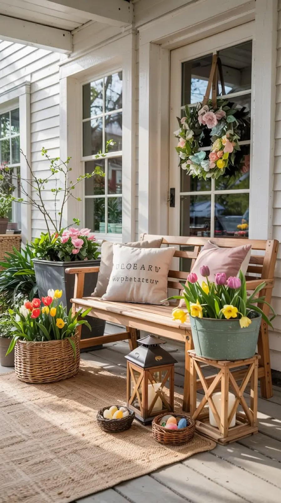
Bikes, Benches and Small Props
6. Prop a Bike by the Door
A bike with a basket of flowers is a cheap prop and an instant focal point. Prop it by the door with the kickstand down.
Put the flowers in a jar inside the basket so they stay fresh and the wicker stays dry.
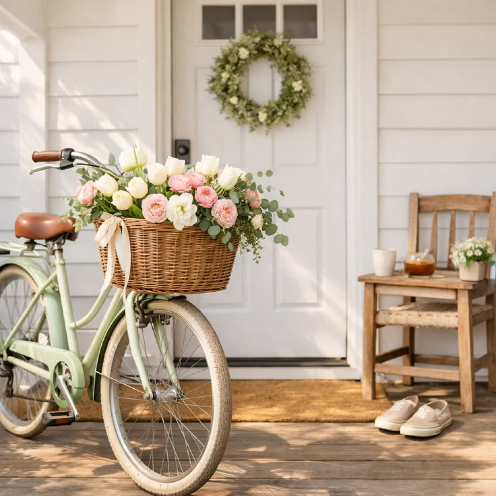
7. Keep the Rest Plain
A pale door with a small wreath and a bike is quiet and charming. Keep the rest of the porch plain.
Add a watering can on the floor and a pair of gloves for a gardening feel, as here.
Park the bike on a mat or a board so the tires do not mark the floor.
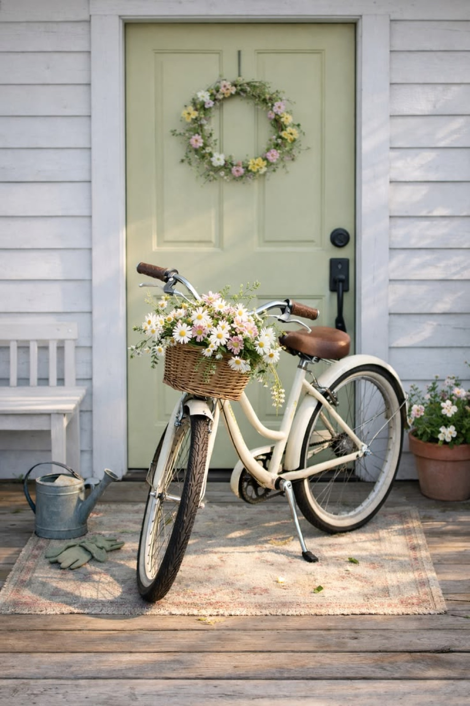
8. Plant Herbs in Crates
Old crates make cheap planters. Line them with landscape fabric and fill them with herbs and flowers, as in front of this bench.
Hang small pots at different heights beside the window for a layered look.
Drill drainage holes in the crates or set nursery pots inside so the wood does not rot.
Plaid and stripes work together when one is large and one is small, as with these bench cushions.
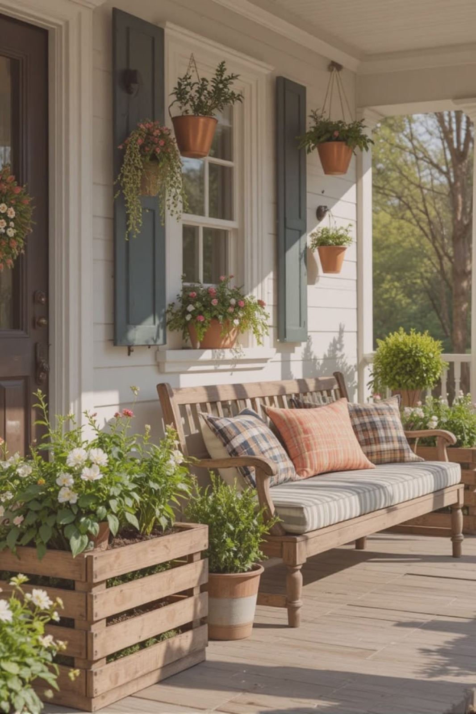
9. Dress a White Bench Lightly
Weathered white wood makes a good backdrop for spring. Keep the bench simple and add two floral pillows.
Set baskets of daisies on the floor and a flower wreath on the door, as here.
Line baskets with plastic and set pots inside so water does not seep through the weave.
Leave room at one end so a person can still sit.
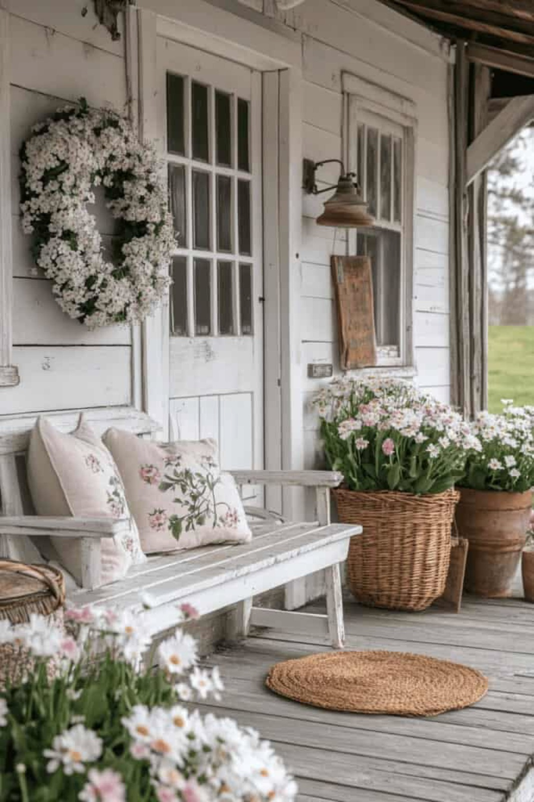
10. Give Lavender Full Sun
Lavender thrives in sun and poor soil, so it suits a bright porch. Plant it in a terracotta pot or a lined basket.
Set daisies in small clay pots on the floor to add a second layer, as here.
Lavender hates wet roots. Water only when the top inch of soil is dry.
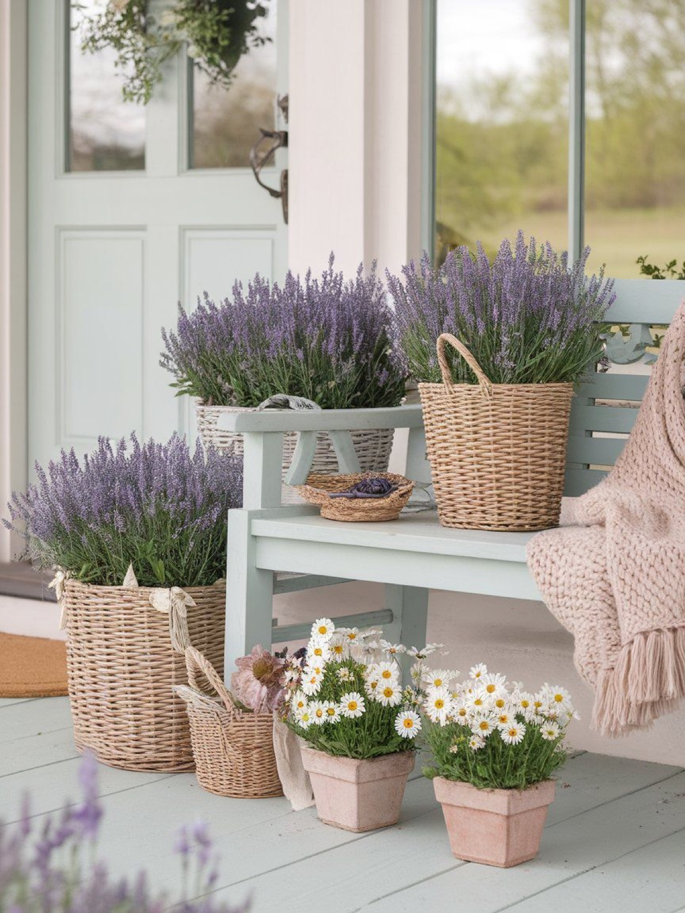
Rockers, Swings and Seats
11. Put Yellow on White Rockers
White rockers and yellow pillows look like spring from the street. Choose outdoor-rated cushions so a shower will not ruin them.
Hang a Boston fern at one end for a green layer, and mist it on dry days.
Stand the rockers a foot back from the rail so the seats stay dry in slanting rain.
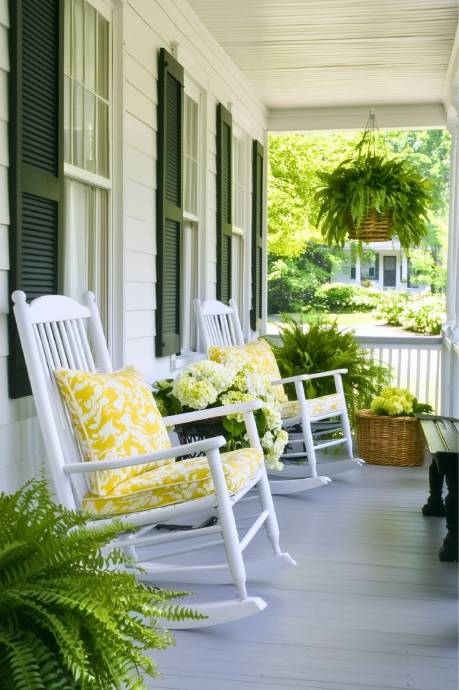
12. Give the Rocker a Side Table
A rocker with a small table is a complete seating spot. Choose a table about 18 inches wide that holds a mug and a lantern.
Use a throw you do not mind washing. Porch air is damp, and fabric gets musty.
Fold the throw over the arm, not the seat, so it stays dry.
Put a battery candle in the lantern so a breeze does no harm.
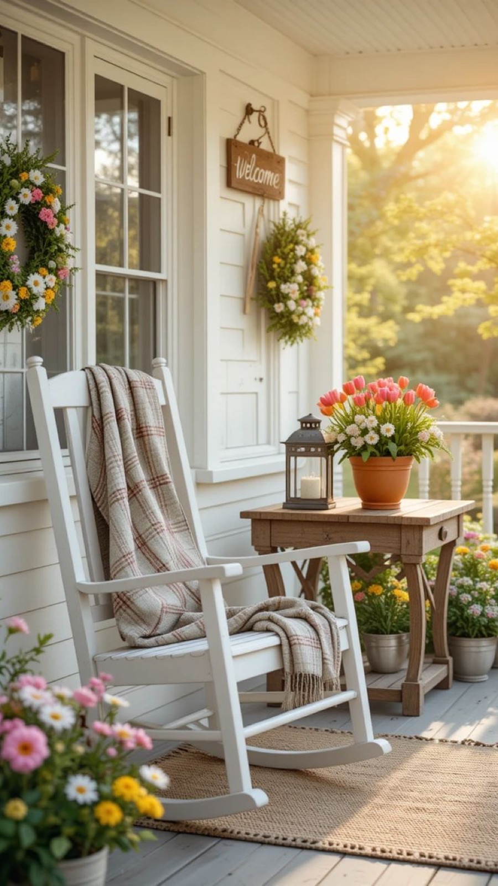
13. Bridge Spring and Summer With Lemons
Lemon decor is the easiest bridge between spring and summer. Pair yellow-print pillows with a potted lemon tree on each side of the door.
Bring citrus trees inside before nights drop to freezing.
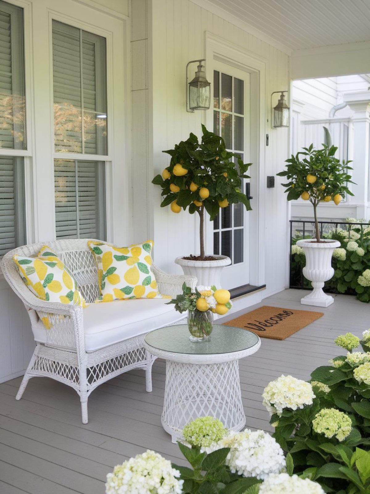
14. Build a Blue-and-White Porch
Blue and white is the safest porch palette. Add large pots of white flowers beside the sofa and a patterned outdoor rug.
Choose a rug in polypropylene so it can be hosed down after a storm.
Glazed ceramic pots crack in a freeze, so choose frost-proof ones or bring them in on cold nights.
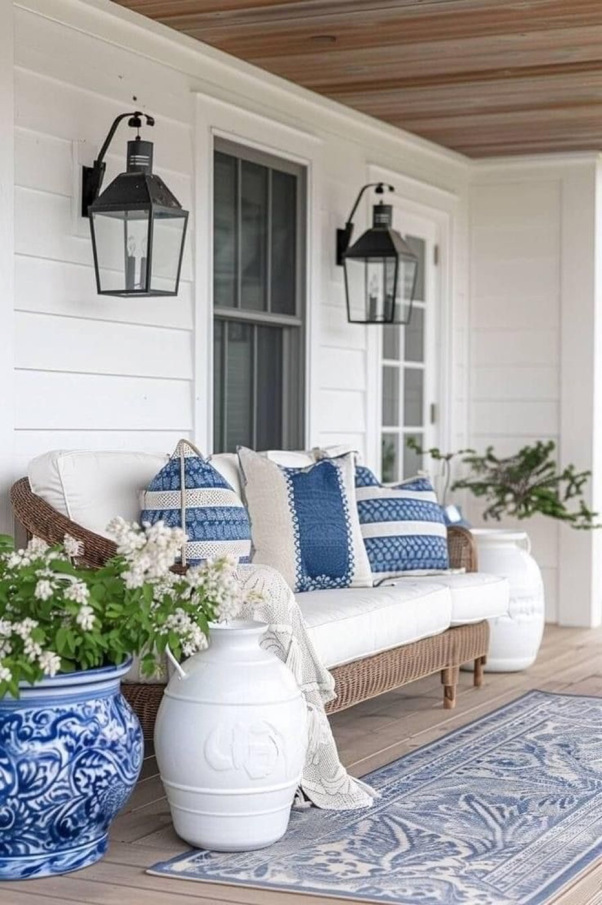
15. Hang an Egg Chair From a Beam
A hanging chair adds fun to a porch. Mount it into a joist or beam rated for at least 300 pounds.
String lights overhead make evenings feel special. Use outdoor-rated strands.
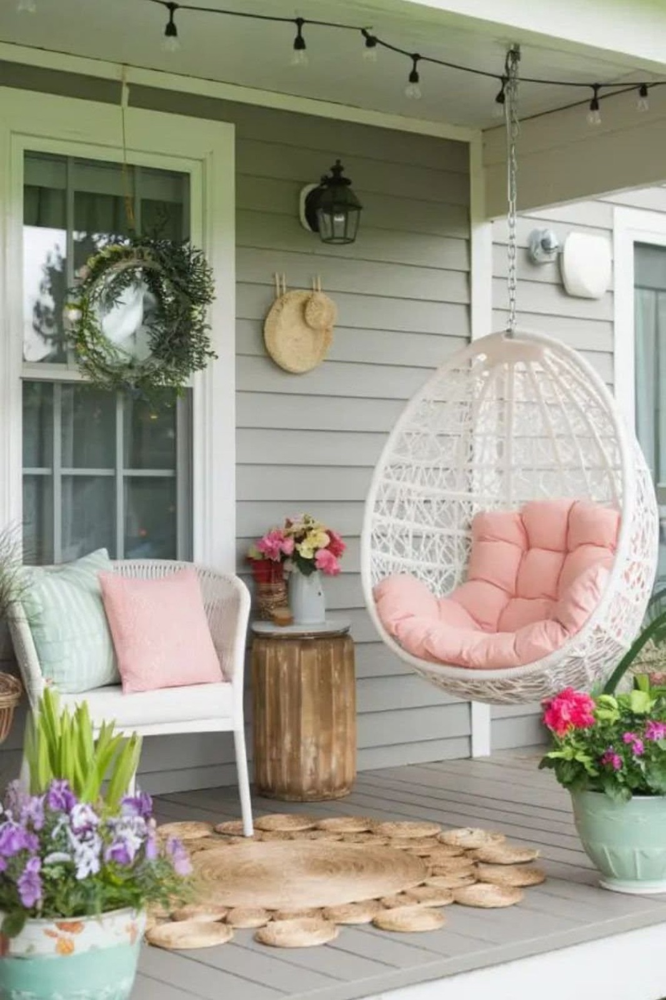
16. Check the Swing Before You Sit
A swing needs one thing before decor: strong chains and hooks. Check them each spring before you sit.
Surround the swing with buckets of tulips and drape a throw over one arm, as here.
Keep the pots and buckets far enough back that nobody kicks them as the swing moves.
A jute rug beneath the swing catches dirt from shoes. Shake it out often.
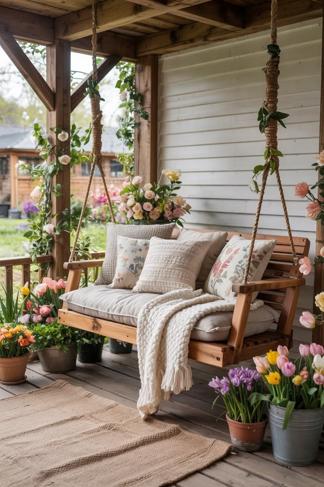
17. Set the Pitcher on a Tray
A small touch like a pitcher of flowers is enough to dress a swing. Put it on a tray so it does not tip.
Pick a ruffled gingham cushion in outdoor fabric for a cottage feel, as here.
Take the pitcher off when the swing is in use. It is a spill waiting to happen.
Keep food in a covered bowl. Sweet fruit draws insects.
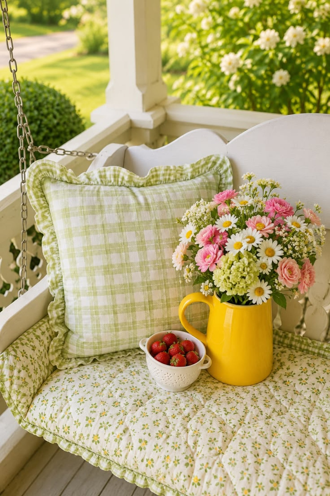
Hanging Baskets and Buckets
18. Match the Bracket to a Wet Basket
Hanging baskets lift color off the ground. Use iron brackets rated for the weight of a wet basket, which is heavy.
Water them daily in wind. They dry out faster than pots on the floor.
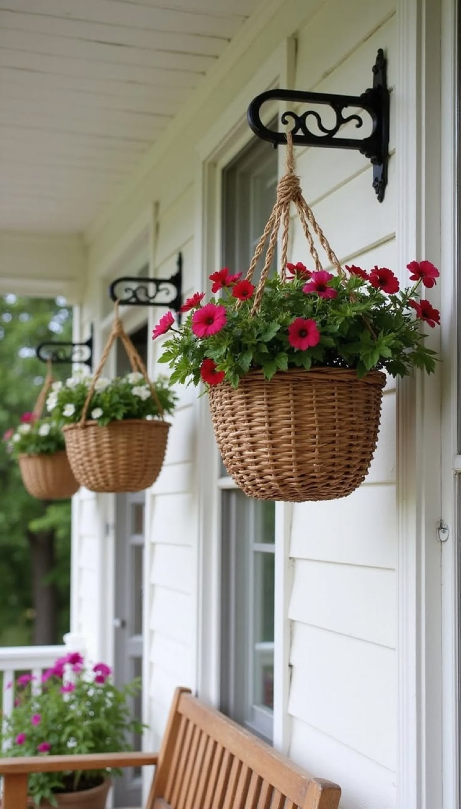
19. Add Boxwood for Year-Round Structure
Boxwood balls give a porch structure that lasts all year. Pair them with seasonal baskets of flowers, as here.
Hang sheer outdoor curtains between the posts for softness and shade.
Tie the curtains back with ribbon in wind so they do not whip.
Hydrangeas drink heavily, so water pink baskets like these daily in warm weather.
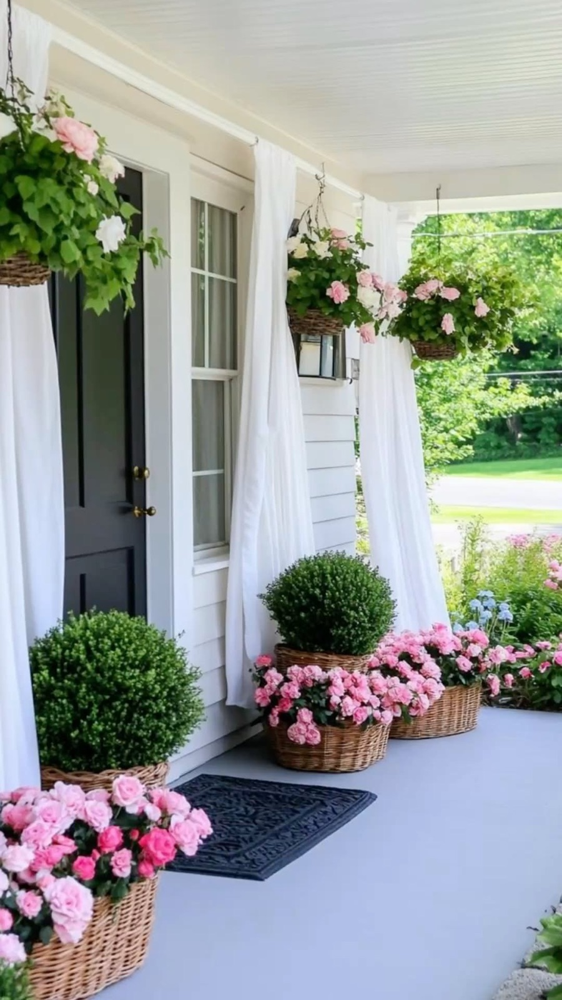
20. Turn a Watering Can Into a Planter
A watering can doubles as a planter. Drill a few holes in the bottom and set a nursery pot inside.
Choose a mix of red, orange and pink tulips for the most color from a distance, as here.
Face the spout toward the steps so it looks like it is pouring flowers.
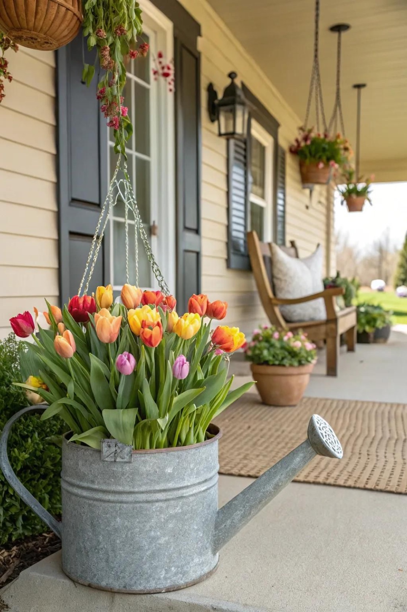
21. Line Up Buckets of Tulips
Buckets are the cheapest big planters. Galvanized ones suit a farmhouse porch and hold bulbs well.
Plant bulbs in autumn, or buy forced bulbs in pots and drop them in now.
Drill drainage holes in the bucket bottoms and lift them on feet.
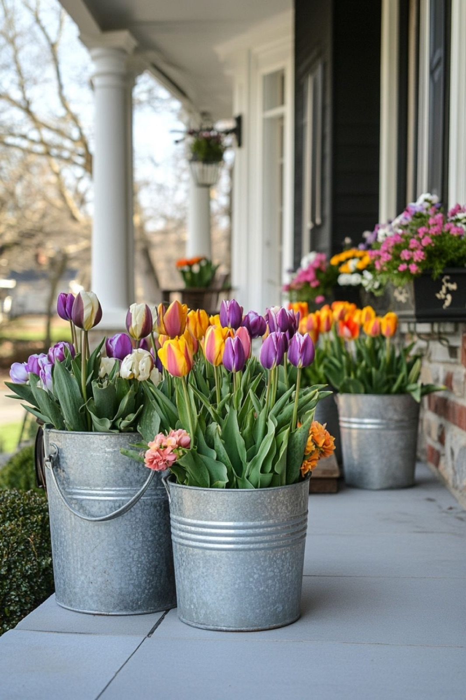
Lanterns, Shelves and Small Spaces
22. Add Height With Lanterns
Lanterns add height when you cannot use a table. Group two on the floor and hang one, as here.
Use battery candles so wind does not blow them out.
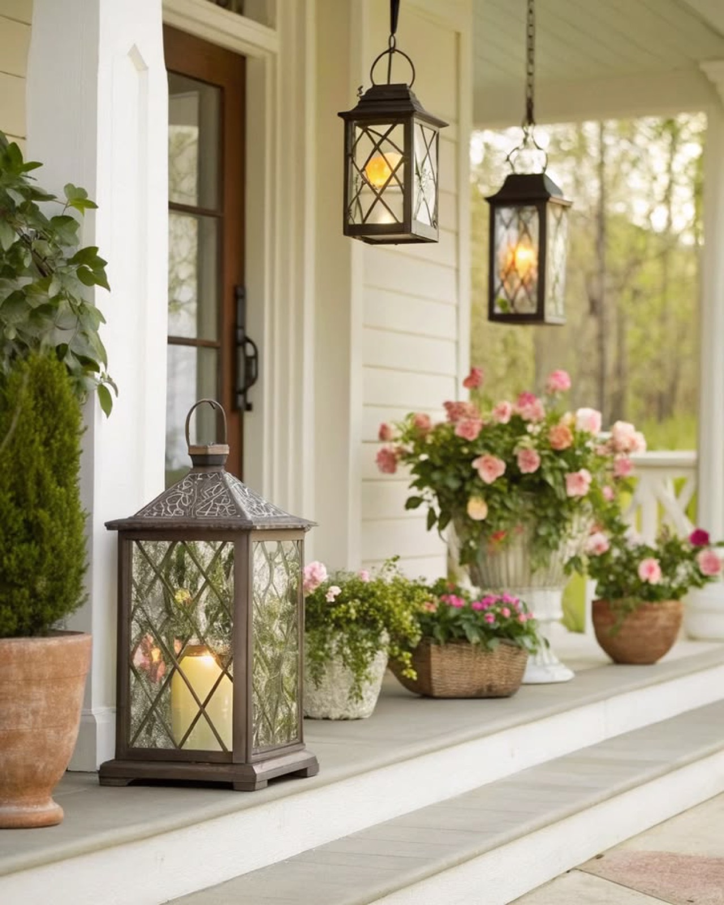
23. Put One Tree on the Balcony
A narrow balcony can hold a bistro table and one big plant. A potted flowering tree gives height.
Choose a faux tree if wind is strong at that height, or add a heavy base.
A narrow outdoor rug marks the floor and stops the space looking like a corridor.
Check your lease or building rules before adding weight or string lights to a balcony rail.
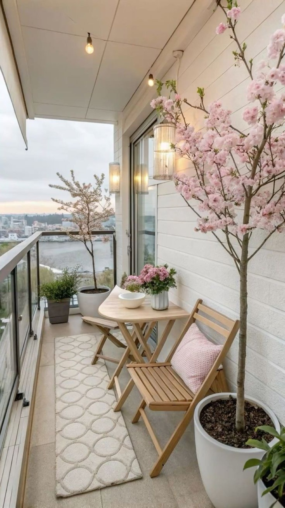
24. Stack Herbs on a Ladder Shelf
A ladder shelf displays many small pots in a small footprint. Put sun-loving herbs on top and shade plants lower.
Anchor it to the wall with a bracket if the porch is windy.
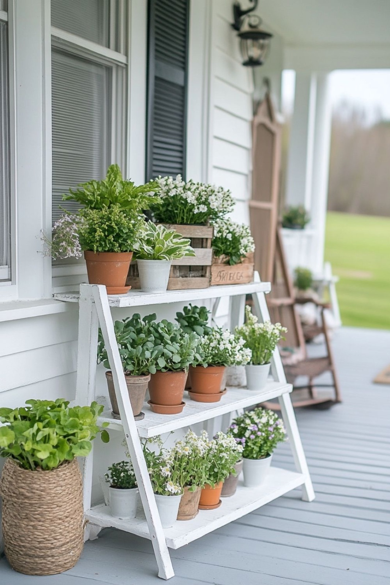
25. Set Up a Potting Bench
A potting bench makes a seasonal display and a place to plant. Keep it near a spigot if you can.
A striped outdoor runner under it brings the yellow to the floor, as here.
Set the daffodils in pots on the lower slats so wind does not blow them over.
Keep a pair of gloves and a trowel on the bench. A working display looks lived in.
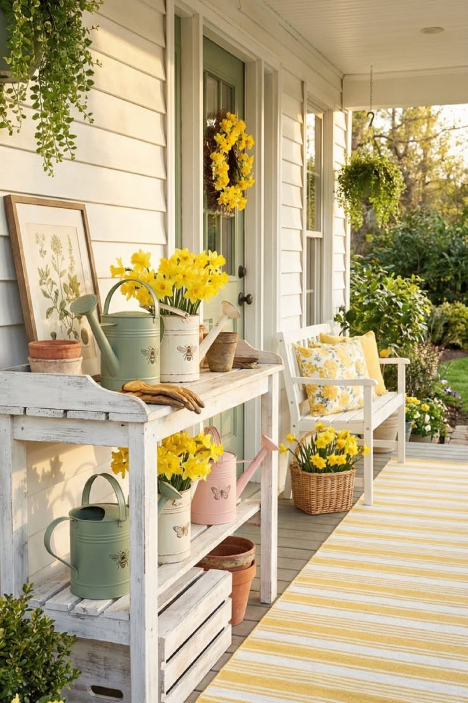
Common Mistakes (and Fixes)
- Mistake: tender plants set out too early. Fix: stay with pansies and tulips until nights stay above 50°F.
- Mistake: indoor cushions outside. Fix: choose outdoor-rated fabric that dries fast.
- Mistake: pots with no drainage. Fix: drill holes or set a nursery pot inside the decorative one.
- Mistake: weak hooks under heavy baskets. Fix: mount into a beam with brackets rated for the weight.
- Mistake: decor that blocks the door. Fix: keep a 36-inch clear path from the steps to the door.
Where to Start
Start at the door. A wreath, a mat and three pots do most of the work, and one seat finishes it if there is room.
Look at the ten-day forecast before you buy anything tender. A cold night can undo a weekend of work, and a move indoors costs nothing.